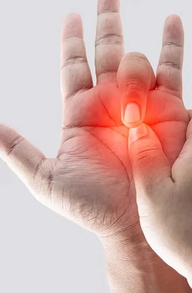
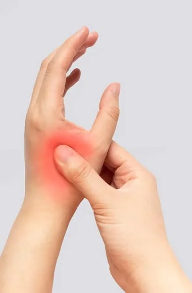
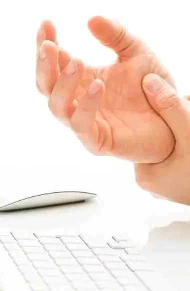
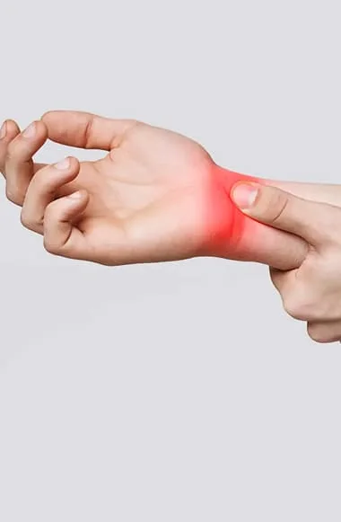
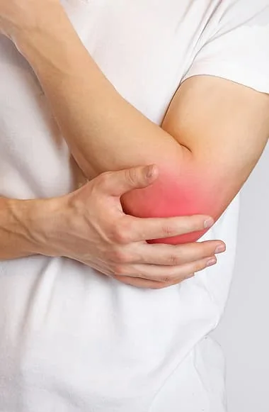
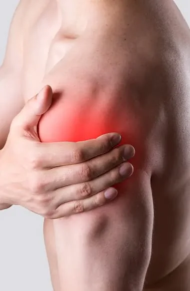

Home / Conditions
What’s wrong with my hand?
Twenty-five conditions Dr. Badia treats, from the fingertip to the shoulder, explained in a sentence each. Search by name or by what you feel.
Finger
Locking, bent, stiff

Fingers that catch, curl in or won’t straighten are usually tendons or the tissue around them. Most are fixed with small, quick procedures, often while you stay awake.
Trigger finger
A finger that catches or locks when you bend it, caused by a tight tendon pulley.
Read Dr. Badia’s articleMallet finger
The fingertip droops and won’t straighten after the tendon is torn, often from a ball strike.
Read Dr. Badia’s articleBoutonnière deformity
The middle joint bends down while the tip bends back, after an injury to the tendon over the joint.
Read Dr. Badia’s articleHow Dr. Badia treats it
- Trigger finger release Often done awake
- Mallet finger care Splint or repair
- Joint procedures for finger arthritis Small-joint care
Thumb
Base pain, weak pinch

Pain at the base of the thumb when you turn a key or open a jar is usually arthritis of the joint that lets the thumb swing across the palm. This is where Dr. Badia does some of his most distinctive work.
Thumb arthritis (basal joint)
Pain at the base of the thumb with pinching, twisting and gripping. Read Dr. Badia’s full approach on the thumb page.
Dr. Badia’s approach to thumb arthritisUCL injury (skier’s thumb)
A torn ligament on the inside of the thumb that makes pinch weak and unstable.
Read Dr. Badia’s articleThumb tendon injuries
Cuts or ruptures of the tendons that bend or straighten the thumb.
Read Dr. Badia’s articleDe Quervain’s tenosynovitis
Sharp pain on the thumb side of the wrist, common in new parents lifting an infant.
Read Dr. Badia’s articleHow Dr. Badia treats it
- BioPro thumb joint replacement Keeps the bone
- Thumb arthroscopy Camera-guided
- Thumb ligament repair (UCL, RCL) For unstable thumbs
Hand
Numbness, cords, breaks

Numb fingers at night, a cord pulling a finger into the palm, a broken bone that healed crooked. Most hand surgery here happens in the office or at the surgery center in the same building.
Carpal tunnel syndrome
Numb, tingling fingers, worse at night, from a squeezed nerve at the wrist.
Read Dr. Badia’s articleDupuytren’s contracture
Cords under the palm that slowly pull fingers into a bent position.
Read Dr. Badia’s articleHand arthritis
Wear of the cartilage in the joints of the hand, with pain and lost grip.
Read Dr. Badia’s articleHand fractures
Broken bones in the hand that need to heal straight to keep the fingers working together.
Read Dr. Badia’s articleRheumatoid arthritis
Inflammatory arthritis that can deform fingers and damage tendons over time.
Read Dr. Badia’s articleHow Dr. Badia treats it
- Endoscopic carpal tunnel release In-office, awake
- Dupuytren’s treatment Release of the cord
- Fracture fixation Same-building surgery
Wrist
Sprains that never heal

A “sprain” that still hurts months later is often a ligament or cartilage tear that an X-ray can’t show. The wrist is crowded and unforgiving, and it rewards a surgeon who looks inside it.
TFCC tear
Pain on the little-finger side of the wrist from a torn cartilage cushion.
Read Dr. Badia’s articleWrist arthritis
A stiff, painful wrist, often years after an old fracture or ligament tear.
Read Dr. Badia’s articleWrist ganglion cyst
A fluid-filled lump on the wrist that can press and ache. Can be removed arthroscopically.
Read Dr. Badia’s articleHow Dr. Badia treats it
- Wrist arthroscopy Camera-guided repair
- Scapholunate ligament reconstruction For hidden tears
- Total wrist replacement or fusion For worn-out wrists
Elbow
Tennis elbow, torn biceps

Elbow pain that lingers through rest and therapy is usually a worn tendon. A torn biceps at the elbow is the opposite: it needs to be repaired quickly.
Tennis elbow
Pain on the outside of the elbow from a worn tendon, very common in people who never play tennis.
Read Dr. Badia’s articleCubital tunnel syndrome
Numbness in the ring and little fingers from a squeezed ulnar nerve at the elbow.
Read Dr. Badia’s articleDistal biceps tendon tear
A pop at the front of the elbow and a weak forearm. Best repaired early.
Read Dr. Badia’s articleHow Dr. Badia treats it
- Tenex, ultrasound-guided No open incision
- Distal biceps reconstruction For complete tears
- PRP and orthobiologics Guided injections
Shoulder
Cuff tears, arthritis

Rotator cuff tears, a shoulder that keeps dislocating, arthritis that wakes you at night. Shoulder care is shared with Dr. Joel Peterson, a shoulder and elbow specialist trained at Columbia and HSS.
Rotator cuff tear
Pain lifting the arm and at night, from a torn shoulder tendon.
Read Dr. Badia’s articleShoulder arthritis
Grinding, stiffness and pain from worn cartilage in the ball and socket.
Read Dr. Badia’s articleLabral tear
A torn rim of cartilage in the socket, often with a shoulder that slips or dislocates.
Read Dr. Badia’s articleFrozen shoulder
A shoulder that becomes painful and very stiff, often without an injury.
Read Dr. Badia’s articleShoulder impingement
Pain when reaching overhead as the tendons pinch under the bone above them.
Read Dr. Badia’s articleHow Dr. Badia treats it
- Rotator cuff repair with collagen patch Arthroscopic
- Outpatient shoulder replacement or resurfacing Go home same day
- Latarjet for recurrent dislocation Stability surgery
Nothing matched. Try a different word, or ask Dr. Badia directly.
Not sure what it is?
You don’t need a diagnosis to book. Tell us where it hurts and what you can’t do anymore.